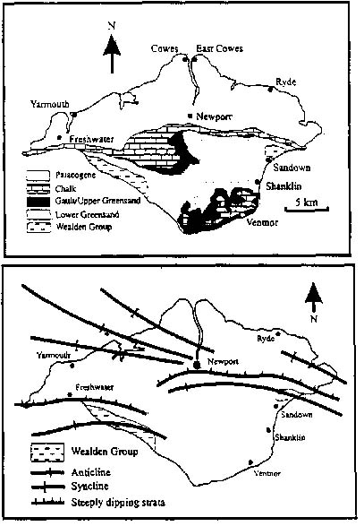
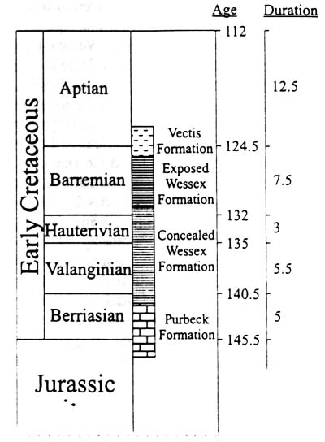
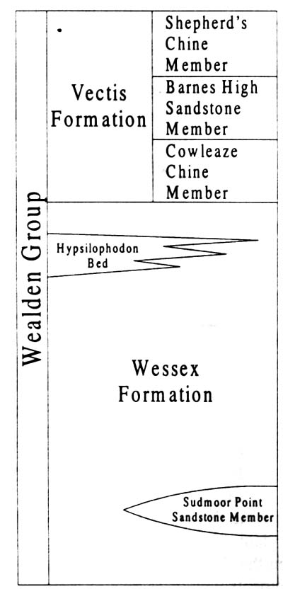
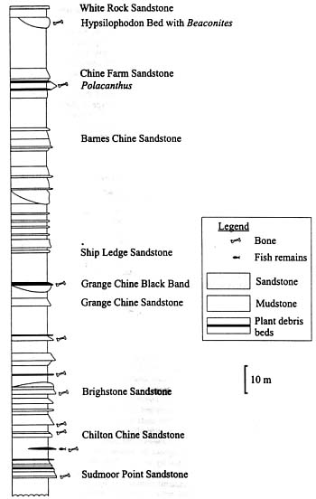
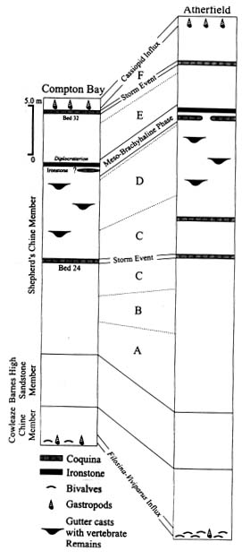
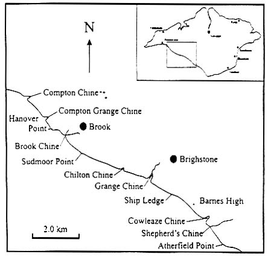
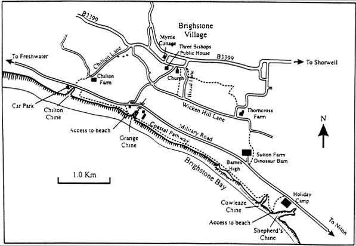

Field Excursion to the Wealden Group (Early Cretaceous) of the Isle of Wight
2nd September 2000 - Leader: Dave Martill
Introduction
The Lower Cretaceous Wealden Group rocks of the southeast and southwest coasts of the Isle of Wight are of international importance for the abundance, diversity and high quality of preservation of dinosaur fossils. No other site in Europe yields dinosaurs in such profusion, and because very few sites of similar age are known elsewhere in the world, the Isle of Wight fossils offer a unique window to life in and around the coastal swamps and lagoons of Europe approximately 120 million years ago. Although fishermen and beachcombers surely must have found dinosaur fossils on the beaches and while dredging for scallops in historic times, the first description of dinosaur bones from the Island was not written until 1829. The accolade of first person to describe an Isle of Wight dinosaur bone goes to Dean William Buckland, then at Oxford, who described some fragmentary remains of Iguanodon found on the beach at Yaverland on the southeast coast (Buckland 1829). Since that time hundreds of dinosaur fossils have been discovered and described. Many famous scientists visited the Isle of Wight during the Victorian Era, including even Charles Darwin, who apparently began writing The Origin of Species while holidaying at Sandown. It is not known if Darwin collected fossils while on the Island, or whether or not he met any of the fossil collectors living on the Island at the time. But many other eminent scientists did.
Today, experts in geology and palaeontology continue to explore the Island for its ancient treasures. Oil companies use the Island's cliffs to familiarise their geologists with rocks unseen deep below the-English Channel and Western approaches where recent offshore exploration has discovered oil reserves deserved of further exploration. The Geology of the Isle of Wight clearly has an important role to play in our national natural, cultural and economic activities.
THE EARLY SCIENTIFIC PERIOD
Dean William Buckland (b. 1784, d. 1856)
Considered by many historians to have been one of the Great British eccentrics, William Buckland was of sound mind, a great thinker and certainly not too eccentric, for he later became Dean of Westminster Abbey. His eccentricity is in part attributed to his keeping of wild animals such as bears and jackals.... in his house! But he was also one of the earliest of a long list of eminent clergy who studied natural history and geology in a scientific fashion. Perhaps it was this activity that was considered eccentric in the earliest part of the 19th century! Buckland was one of the founders of modern vertebrate palaeontology and a major scientific achievement attributable to him is that he was first to name and scientifically describe a dinosaur, Megalosaurus, in 1824, beating Gideon Mantell by just one year (Searjeant 1997). It is worth noting here that Buckland did not invent the name Megalosaurus, this can be attributed to James Parkinson (1822). Besides being the first person to scientifically describe dinosaur remains (which came from Qxfordshire), Buckland also had a collection of dinosaur bones from Yaverland, near Sandown. These appear to have been collected during the Summer of 1842 or 1843 in one group and filled five boxes (as recorded in a letter written by Buckland to a Mr Stowe of Buckingham in December 1843 and reproduced by Phillips (1871, p. 245)). These probably represent the first Isle of Wight dinosaur bones to have ended up in a scientific collection. Buckland described one of these bones, a large pedal phalange, in 1829, and thus became the first person to figure and describe a dinosaur bone form the Isle of Wight. Buckland was also in possession of a complete skeleton of Hypsilophodon from the Isle of Wight (one of a pair found together at Barnes High, the other went to Gideon Mantell). These specimens went undescribed because both Buckland and Mantell thought the skeletons were of young Iguanodon
Gideon Algernon Mantell (b. 1790, d. 1852)
Gideon Algernon Mantell was a physician and surgeon who lived in Lewes, East Sussex. His biggest claim to fame is as the discoverer and earliest scientific describer of the first ornithischian dinosaur to be found, a fossil he called Iguanodon. However, like Buckland, Mantell did not know his new animal as a dinosaur, for the term was not invented for another 16 years. A possibly apocryphal story suggests that it was his wife Mary Anne who, in 1822, found a large and highly unusual tooth in a stone pile during a protracted wait while Mantell attended to a patient. This story has subsequently been claimed to be nothing more than sentimental romanticism, and the truth is much more mundane (Dean 1999). However, (Lucas (1999) considers Dean's claim to be unconvincing, so there may be some truth in the story yet. Later, Mantell (1825) went on to describe this and other teeth, as well as numerous bones, obtained from strata in the Tilgate Forest of the Weald of Sussex and from around the village of Cuckfield. Had he described the tooth when it was first found he would have been credited with being the first person to describe and name a dinosaur. However, he was beaten by Dean William Buckland (see above) who described his Jurassic Megalosaurus from Oxfordshire just one year earlier (Buckland 1824).
Mantell wrote several books on geology and palaeontology, including Geological Excursions round the Isle of Wight and along the adjacent coast of Dorsetshire (Mantell 1854). He also wrote a number of scientific papers in which he described dinosaur remains from the Isle of Wight (e.g., Mantell 1846). He is remembered by scientists for having several Lower Cretaceous fossil species named after him including the fish Lepidotes mantelli and the dinosaur Iguanodon mantelli.
Richard Owen (b. 1804, d. 1892)
Richard Owen invented the term Dinosauria. This he did in 1842 when he published the text of a lecture he gave for the British Association for the Advancement of Science one year earlier in Plymouth. He used the term, meaning 'fearfully great lizards' in Owen's translation, to encompass three previously described taxa; Megalosaurus, a theropod from the Jurassic of Oxfordshire described by Buckland (1824), and two of Gideon Mantell's monsters, Iguanodon and Hylaeosaurus from the Weald of Sussex. Owen was a great comparative anatomist and described several new dinosaurs himself, including the first sauropod ever to be described, Cetiosaurus, also from the Jurassic of Oxfordshire (Qwen thought this was a giant crocodile), and Scelidosaurus harrisoni, an armoured ornithischian from the Lower Jurassic of Dorset.
Owen was instrumental in establishing the British Museum of Natural History at South Kensington, now the Natural History Museum, London. He is known to have visited the Reverend W. D. Fox on the Isle of Wight on at least one occasion, and perhaps even went to the shore to collect fossils with him. Records of correspondence between Richard Owen and the Reverend Fox (see below) clearly show the high regard that Fox had for Owen. Much of the correspondence between the two relates to Fox's tales of new discoveries of dinosaur bones and are useful sources regarding locality details and context of discovery. Letters of a more serious nature show that Fox felt that his position as curate of Brixton (now spelled Brighstone) on the Isle of Wight was under threat. Fox wrote at least two letters to Owen pleading for support to remain in his post (see Blows 1983), pointing out the valuable contributions he had made to scientific discovery while based on the Island. Fox remained on the Isle of Wight until his death, so perhaps Owen did indeed have a word in the right ear.
Owen named a number of Isle of Wight dinosaurs including Polacanthus foxii Poekilopleuron pusillus (= Aristosuchus pusillus).
Reverend William D. Fox (b. 1813, d. 1881)
The Reverend W. D. Fox, born in Cumberland, the son of a yeoman farmer, never married. He was an avid collector of Isle of Wight fossils and is famous for discovering several new dinosaurs, including Calamospondylus, Aristosuchus, Hypsilophodon and Polacanthus. Many of these dinosaurs were eventually named in honour of him. Fox arrived on the Isle of Wight, taking up the curate's post at Brixton (now Brightstone), in 1862, aged 43. He kept company with such eminent scientists as John Hulke, Richard Owen and perhaps even Charles Darwin and was a friend and acquaintance of the famous English poet Alfred Lord Tennyson. Living as he did in Brighstone, Fox had easy access to the cliffs and foreshore of the southwest coast where, in the last century, the collecting grounds were a prolific source of dinosaur fossils. We may imagine Fox in his pulpit, requesting the strong arms of his parishoners to help him remove his latest dinosaur discovery from the crumbling cliffs. Mrs McAll, wife of the vicar of Brighstone, said of Fox < #148;It was always the bones first and the parish next”.
His large collection of more than 500 specimens, valued at 300 guineas, was acquired by the Trustees for the British Museum of Natural History, London, in 1882, where it is still housed and is.the focus of many scientific studies on dinosaur anatomy and biology. For an account of the Reverend Fox and his relationship with the Victorian scientific elite see the biography by Blows (1983).
Although Fox was not a professional scientist, and could be regarded as an amateur collector, his impact on the study and discovery of British dinosaurs is almost unparalleled. He rarely attempted to write about his discoveries, prefemng to leave that to those he regarded as experts, although on occasion he did submit notes to magazines and the occasional scientific meeting (e.g. Fox 1865, 1869, Fox in Anon. 1866a, b). In many ways Fox symbolises the crucial role that amateur fossil collectors have played, and still play, in our understanding of ancient life on Earth. Fox probably discovered more species of dinosaur than anyone else in the UK, and also has more dinosaurs named after him than any other Englishman.
Samuel Husbands Beckles (b. 1814, d. 1890)
Samuel H. Beckles is more famous for his work on the dinosaur fossils from the Weald of Sussex than for his discoveries on the Isle of Wight. However, his experiences in Sussex served him well on his few jaunts to the Island, for Beckles was the first person to recognise the presence of dinosaur footprints on the Isle of Wight (Beckles 1862). He also discovered articulated dinosaur material.
Samuel Beckles was a lawyer born in Barbados. He retired to St Leonards on Sea, Sussex, in 1845 where he devoted his time to collecting fossils and the study of Wealden Geology (Woodhams 1990). Although not a trained scientist, Beckles' contribution to palaeontology and geology was acknowledged when, in 1859, he was elected a fellow of the Royal Society of London. Beckles was a good friend of Richard Owen, who described and illustrated several of Beckles' more important discoveries in his monographs. His large collection of fossils was mostly transferred to the Natural History Museum in London on his death, although some material, though lacking documentation, is thought to be held in the Hastings Museum. His greatest contributions were his discoveries of exceptional finds of Iguanodon bones. Beckles also found the remains of new dinosaurs, although some of these, such as the theropod now called Becklespinax altispinax, were not recognised as representing new genera until long after his death (Huene 1923, see also Paul 1988, Olshevsky 1991).
Thomas Henry Huxley (b. 1825, d. 1895)
Thomas Huxley is perhaps not the sort of scientist one might associate with the Isle of Wight. His fame as a champion of Charles Darwin (he was often referred to as "Darwin's Bulldog"), and his skills as an anatomist and philosopher of natural history are well known. He was one of the first scientists to recognise the relationship between birds and dinosaurs. Perhaps some of this tremendous insight can be attributed in part to his study of the dinosaurs of the Isle of Wight, for in the same year, 1870, that he described Hypsilophodon foxi, he also published a paper in which he declared that ”the Dinosauria wonderfully approached......birds in their general structure, and, therefore,......these extinct reptiles were more closely related to birds than any which now live” (Huxley 1870, p. 18). This idea lost favour in the 1930's, but today, the notion of birds as dinosaurs has gained almost universal acceptance.
John Whitaker Hulke (b. 1830, d. 1895)
Dr John Whitaker Hulke was an achiever. Although his education began in Germany he eventually attended Kings College Medical School, London, where he attained his doctorate. Although a surgeon by profession, he had much wider interests. He was, for example, an accomplished botanist and student of Shakespeare. As a geologist and palaeontologist he achieved one of the greatest accolades of that profession by becoming President of the Geological Society of London in 1882. By 1890 he had become Foreign Secretary to Her Majesty's Government. In his few momentg of spare time he amassed a large collection of Wealden fossils, and it is possible that Hulke and the Rev. Fox may have collected together on the shores of the Isle of Wight. By the time of his death Hulke had written more than 50 palaeontological papers of which some 28 were devoted to dinosaurs. After his death his widow donated his extensive collection to the Natural History Museum, London.
Richard Lydekker (b. 1849, d. 1915)
Before Richard Lydekker became keeper of fossil reptiles at the British Museum of Natural History, London, he was with the Geological Survey of India, where he worked on fossil mammals from the Siwalik Hills. He joined the British Museum of Natural History in 1874 where one of his many achievements was to produce a catalogue of the fossil reptiles and amphibians held in the National collection: a work that ran to four volumes. This work was far more than just a list of specimens, as it provided a new classification of fossil reptiles and many specimens included were described for the very first time. Besides these volumes, in which he describes several new dinosaurs from the Isle of Wight, Lydekker also catalogued the fossil bird and mammal collections, and earned for himself the nickname of 'The Lightening Cataloguer' (Anon 1915). He wrote several popular books on extant mammals, a textbook on palaeontology and countless scientific papers describing new discoveries of fossil reptiles. Many of the latter works were important contributions to our knowledge of dinosaur anatomy. He was elected a fellow of the Royal Society in 1894 and was awarded the Geological Society's prestigious Lyell Medal in 1902.
Harry Govier Seeley (b. 1839, d. 1909)
A former student of Richard Owen, Harry Govier Seeley eventually became Professor of Geology at King's College, London. His background proved that, even in Victorian times, it was possible for a commoner to fight their way to recognition amongst the establishment and academic elite using intellect coupled with sheer hard work. Seeley devoted his life to the study of vertebrate fossils, especially to therapsids (a group of terrestrial vertebrates of the late Palaeozoic and early Mesozoic that were precursors to mammals) and pterosaurs. He wrote two books on pterosaurs, one of which < #150; Dragons of the air, published in 1901 < #150; was the first ever popular account of these flying reptiles. His fame as a student of dinosaurs was in recognising that dinosaurs could be divided into two groups, the Ornithischia and the Saurischia, distinguished on the basis of differences in the construction of the pelvis. Seeley was a prolific writer of scientific papers, and amongst more than 100 works are several papers on dinosaurs from the Isle of Wight. Seeley is credited with describing the Isle of Wight dinosaurs Ornithopsis, Ornithodesmus and Sphenospondylus, although the latter is now considered indeterminate.
In 1887 Seeley recognised that the so-called Isle of Wight crocodile Poekilopleuron pusillus was in fact a dinosaur and named it Aristosuchus pusillus.
Reverend William D. Fox (b. 1813, d. 1881)
The Reverend W. D. Fox, born in Cumberland, the son of a yeoman farmer, never married. He was an avid collector of Isle of Wight fossils and is famous for discovering several new dinosaurs, including Calamospondylus, Aristosuchus, Hypsilophodon and Polacanthus. Many of these dinosaurs were eventually named in honour of him. Fox arrived on the Isle of Wight, taking up the curate's post at Brixton (now Brightstone), in 1862, aged 43. He kept company with such eminent scientists as John Hulke, Richard Owen and perhaps even Charles Darwin and was a friend and acquaintance of the famous English poet Alfred Lord Tennyson. Living as he did in Brighstone, Fox had easy access to the cliffs and foreshore of the southwest coast where, in the last century, the collecting grounds were a prolific source of dinosaur fossils. We may imagine Fox in his pulpit, requesting the strong arms of his parishoners to help him remove his latest dinosaur discovery from the crumbling cliffs. Mrs McAll, wife of the vicar of Brighstone, said of Fox < #148;It was always the bones first and the parish next”.
His large collection of more than 500 specimens, valued at 300 guineas, was acquired by the Trustees for the British Museum of Natural History, London, in 1882, where it is still housed and is.the focus of many scientific studies on dinosaur anatomy and biology. For an account of the Reverend Fox and his relationship with the Victorian scientific elite see the biography by Blows (1983).
Although Fox was not a professional scientist, and could be regarded as an amateur collector, his impact on the study and discovery of British dinosaurs is almost unparalleled. He rarely attempted to write about his discoveries, prefemng to leave that to those he regarded as experts, although on occasion he did submit notes to magazines and the occasional scientific meeting (e.g. Fox 1865, 1869, Fox in Anon. 1866a, b). In many ways Fox symbolises the crucial role that amateur fossil collectors have played, and still play, in our understanding of ancient life on Earth. Fox probably discovered more species of dinosaur than anyone else in the UK, and also has more dinosaurs named after him than any other Englishman.
Samuel Husbands Beckles (b. 1814, d. 1890)
Samuel H. Beckles is more famous for his work on the dinosaur fossils from the Weald of Sussex than for his discoveries on the Isle of Wight. However, his experiences in Sussex served him well on his few jaunts to the Island, for Beckles was the first person to recognise the presence of dinosaur footprints on the Isle of Wight (Beckles 1862). He also discovered articulated dinosaur material.
Samuel Beckles was a lawyer born in Barbados. He retired to St Leonards on Sea, Sussex, in 1845 where he devoted his time to collecting fossils and the study of Wealden Geology (Woodhams 1990). Although not a trained scientist, Beckles' contribution to palaeontology and geology was acknowledged when, in 1859, he was elected a fellow of the Royal Society of London. Beckles was a good friend of Richard Owen, who described and illustrated several of Beckles' more important discoveries in his monographs. His large collection of fossils was mostly transferred to the Natural History Museum in London on his death, although some material, though lacking documentation, is thought to be held in the Hastings Museum. His greatest contributions were his discoveries of exceptional finds of Iguanodon bones. Beckles also found the remains of new dinosaurs, although some of these, such as the theropod now called Becklespinax altispinax, were not recognised as representing new genera until long after his death (Huene 1923, see also Paul 1988, Olshevsky 1991).
Thomas Henry Huxley (b. 1825, d. 1895)
Thomas Huxley is perhaps not the sort of scientist one might associate with the Isle of Wight. His fame as a champion of Charles Darwin (he was often referred to as "Darwin's Bulldog"), and his skills as an anatomist and philosopher of natural history are well known. He was one of the first scientists to recognise the relationship between birds and dinosaurs. Perhaps some of this tremendous insight can be attributed in part to his study of the dinosaurs of the Isle of Wight, for in the same year, 1870, that he described Hypsilophodon foxi, he also published a paper in which he declared that ”the Dinosauria wonderfully approached......birds in their general structure, and, therefore,......these extinct reptiles were more closely related to birds than any which now live” (Huxley 1870, p. 18). This idea lost favour in the 1930's, but today, the notion of birds as dinosaurs has gained almost universal acceptance.
John Whitaker Hulke (b. 1830, d. 1895)
Dr John Whitaker Hulke was an achiever. Although his education began in Germany he eventually attended Kings College Medical School, London, where he attained his doctorate. Although a surgeon by profession, he had much wider interests. He was, for example, an accomplished botanist and student of Shakespeare. As a geologist and palaeontologist he achieved one of the greatest accolades of that profession by becoming President of the Geological Society of London in 1882. By 1890 he had become Foreign Secretary to Her Majesty's Government. In his few momentg of spare time he amassed a large collection of Wealden fossils, and it is possible that Hulke and the Rev. Fox may have collected together on the shores of the Isle of Wight. By the time of his death Hulke had written more than 50 palaeontological papers of which some 28 were devoted to dinosaurs. After his death his widow donated his extensive collection to the Natural History Museum, London.
Richard Lydekker (b. 1849, d. 1915)
Before Richard Lydekker became keeper of fossil reptiles at the British Museum of Natural History, London, he was with the Geological Survey of India, where he worked on fossil mammals from the Siwalik Hills. He joined the British Museum of Natural History in 1874 where one of his many achievements was to produce a catalogue of the fossil reptiles and amphibians held in the National collection: a work that ran to four volumes. This work was far more than just a list of specimens, as it provided a new classification of fossil reptiles and many specimens included were described for the very first time. Besides these volumes, in which he describes several new dinosaurs from the Isle of Wight, Lydekker also catalogued the fossil bird and mammal collections, and earned for himself the nickname of 'The Lightening Cataloguer' (Anon 1915). He wrote several popular books on extant mammals, a textbook on palaeontology and countless scientific papers describing new discoveries of fossil reptiles. Many of the latter works were important contributions to our knowledge of dinosaur anatomy. He was elected a fellow of the Royal Society in 1894 and was awarded the Geological Society's prestigious Lyell Medal in 1902.
Harry Govier Seeley (b. 1839, d. 1909)
A former student of Richard Owen, Harry Govier Seeley eventually became Professor of Geology at King's College, London. His background proved that, even in Victorian times, it was possible for a commoner to fight their way to recognition amongst the establishment and academic elite using intellect coupled with sheer hard work. Seeley devoted his life to the study of vertebrate fossils, especially to therapsids (a group of terrestrial vertebrates of the late Palaeozoic and early Mesozoic that were precursors to mammals) and pterosaurs. He wrote two books on pterosaurs, one of which < #150; Dragons of the air, published in 1901 < #150; was the first ever popular account of these flying reptiles. His fame as a student of dinosaurs was in recognising that dinosaurs could be divided into two groups, the Ornithischia and the Saurischia, distinguished on the basis of differences in the construction of the pelvis. Seeley was a prolific writer of scientific papers, and amongst more than 100 works are several papers on dinosaurs from the Isle of Wight. Seeley is credited with describing the Isle of Wight dinosaurs Ornithopsis, Ornithodesmus and Sphenospondylus, although the latter is now considered indeterminate.
In 1887 Seeley recognised that the so-called Isle of Wight crocodile Poekilopleuron pusillus was in fact a dinosaur and named it Aristosuchus pusillus.
The Quiet Period
The dinosaur mania of Victorian times waned during the early decades of the twentieth century, and in the following years there were very few studies on dinosaurs from the Isle of Wight. In fact, it was not until 1996 that a new species of dinosaur from the Isle of Wight was formally described. Perhaps it was the growing instability in Europe, a shortage of money and of course the commencement of the 1914-18 war that brought to a close the Golden Age of dinosaur discoveries in Europe. Perhaps also it was the opening up of the prolific dinosaur beds in the Cretaceous rocks of North America and Mongolia that drew attention away from the poorly exposed dinosaur-bearing strata of England. The only serious scientific work undertaken on Isle of Wight material in the early part of the twentieth century was that of R. W. Hooley, who described remains of Iguanodon from Brighstone Bay and Atherfield (Hooley 1912, 1925) and some quite remarkable pterosaur remains also from Atherfield (Hooley 1913). After Hooley, only two serious papers were published on Isle of Wight dinosaurs in the 1930s, both by Swinton (1936a, b). Swinton (1934a, b, 1936a, b) discussed the anatomy of Hypsilophodon and the dinosaur fauna as a whole. In fact, this was the first ever synthesis of the entire fauna. In England the recession of the 1930s began to bite and was followed by World War Two. It was not until the war had ended that the Island's dinosaurs were again in the news (Swinton 1946). Dinosaurs in England must definitely have been out of vogue, for apart from a small item by Stroh (1949) published locally, the dinosaurs of the Isle of Wight were virtually ignored by the scientific community until the very late 1960s and early 1970s.
This hiatus in scientific endeavour begs the question as to what happened to all of the dinosaur fossils that were washed from the cliffs during this period. Were they lost to the sea? If so, these remains are probably sitting among the gravel lying about a half kilometre from the present day shoreline. Perhaps these are the rolled, eroded and encrusted remains that continue to be washed up during violent westerly storms.
Reginald Walter Hooley (b. 1866, d. 1923)
Reginald Hooley was a businessman from Winchester with a passion for fossil collecting. He was born in Southampton and, as a youngster, developed a keen interest in geology (Crane and Getty 1975). After moving to Winchester, where he began working for a firm of wine and spirit merchants, he joined the then young Hampshire Field Club and Archaeological Society. By 1918 he had become the local honorary secretary of the club and was active in it until his untimely death in 1923. He made several spectacular discoveries on the Isle of Wight including a near complete skeleton of Iguanodon atherfieldensis and several partial skeletons of pterosaurs and crocodiles. Unlike Fox, Hooley turned his hand to scientific writing and produced several seminal works on the anatomy of Island fossils that he had discovered and is posthumously credited with naming Iguanodon atherfieldensis. Hooley published 14 scientific papers on geology, the majority on aspects of vertebrate palaeontology, but he also wrote about geomorphology and archaeology. By far his greatest scientific publishing achievement was in describing the new pterosaur 'Ornithodesmus' latidens which, subsequently, became the type of a new family of pterosaurs. The text of his seminal work describing the osteology of Iguanodon atherfieldensis was read before the Geological Society of London in November 1925, and was published shortly after (Hooley 1925). At that meeting Charles W. Andrews spoke of the very great loss to palaeontology of Hooley, such was the esteem that he was held by the scientific establishment. Shortly after his death Reid and Chandler (1926) named a fossil plant Hooleya in honour of his contributions to palaeontology. A small part of Hooley's fossil collection was donated to the Winchester Museum where he was an honorary curator from 1918-1923, but the most important specimens he obtained were sold to the Natural History Museum, London (Crane and Getty 1975).
A New Palaeonotological Era on the Island
Scientific interest in Isle of Wight dinosaurs was rekindled by a British palaeontologist now living in the USA: Dr Peter Galton. Galton completed his doctorate on Hypsilophodon in 1967 while studying at University College, London and published several papers on this dinosaur from 1969 onwards. Other workers joined the fray, including William Hlows, a nurse living in Kent. Blows began to collect his own dinosaur fossils during the 1970s and published several papers describing the results of his endeavours (Blows 1978, 1983, 1987). Blows' papers on dinosaur footprints, and on Polacanthus, alerted the interest of the scientific community to the Islands' dinosaurs, and by the end of the 1980s a new era in Island dinosaur studies had begun. Dinosaurs in general had of course become the subject of much scientific debate in the 1970's due to the, almost heretical, claims of Dr Robert Bakker that dinosaurs were warm blooded (see Desmond 1976). Now, for the first time, serious attention was being paid to the biology of dinosaurs. Since then the blockbuster movies Jurassic Park and Jurassic Park the Lost World and of course the spectacular BBC TV series Walking with Dinosaurs have further fuelled a general interest in dinosaurs and their world. The mystery of dinosaurs, their size and diversity, and of course the mystery of their extinction, has persuaded scientists from a wide range of disciplines to contribute to the understanding of dinosaur palaeobiology. It is no surprise today to find geochemists, isotope chemists or even geophysicists working on dinosaur related projects. Isle of Wight dinosaurs continue to add to these debates.
On the Isle of Wight, a new museum dedicated to dinosaurs is to open in 2001. Scientists from the Museum of Isle of Wight Geology, the universities of Portsmouth, Bristol and Cambridge as well as staff at the Natural History Museum, London have been working on the Island's dinosaurs in recent years. Since 1975 Steve Hutt of the Museum of Isle of Wight Geology has secured many new specimens for the Museum collection, and is actively taking part in their excavation and scientific description. The new dinosaur museum secures a future for the dinosaurs of the Isle of Wight and the scientific endeavours that they trigger. To date there are circa 18 currently recognised species of dinosaur found on the Island, although a few are of dubious validity, several species are unique to the island. Some of the remains described last century need re-examining in the light of new discoveries made in Cretaceous rocks elsewhere in the world. While there is little doubt that new species remain to be discovered, the dream of the Island's dinosaur hunters, it is hoped that more complete remains of those dinosaurs known only by tantalising fragments will also be forthcoming.
The Museum of Isle of Wight Geology
In 1913 a small exhibition gallery, office and workshop above the Sandown Carnegie Library became the site of the Isle of Wight Museum of Geology. This small museum, which in 2001 transfers to a new site and adopts a new name, Dinosaur Isle, has a long and somewhat chequered history. The collections of the Museum of Isle of Wight Geology began life as an assortment of archaeological and other specimens gathered by members of the Isle of Wight Philosophical Society which originated in Newport around 1810 (Jackson 1925, unpublished notes in MIWG catalogue). The first custodian of the collection (from 1825-1850) was the Reverend E. Kell F.S.A. After his term the collection became part of the Isle of Wight Museum based in Newport Guildhall. Although the new custodian, Mr P. E. Wilkins, was a keen geologist who acquired many specimens, lack of local interest and finance forced him to place the collection into private storage. These difficulties continued to hamper the collection and its custodian for many years. Prior to the turn of the century, a new custodian, Mr John Wood, operating in new premises in Quay Street belonging to the Newport Literary Society, reorganised the collection. Again, this new custodian added many geological specimens to the collection. In the earliest years of the 20'” century the museum was at it lowest ebb, with few visitors and a severe lack of funds. In 1913 the collection of antiquities, including the archaeological material, went to Carisbrooke Castle Museum while the geological specimens were displayed in a single room above the Free Library (an Andrew Carnegie benevolence) of Sandown Urban Council. In 1925 Mr J. F. Jackson F.G.S. was appointed joint curator of the collection with the Reverend J. C. Hughes. Jackson was an expert geologist with a passion for collecting fossils, and it is to his credit that the museum survived and was modernised. During his curatorship several important local collections were acquired including fossil insects and plants collected by Mr G. W. Collenut. Many specimens, particularly of dinosaur bones, were also obtained at this time, with the private collections of Mr G. T. Woods and Mr H. F. Poole added to the Sandown collection. The museum was again neglected during the Second World War, but afterwards a Mr Grapes became the custodian, and enthusiastically set maintaining the collection for the benefit of the general public. In 1976 Dr Allen Insole was appointed Museums Officer and began a long overdue process of modernisation. Shortly after the appointment of Dr Insole, Mr Steve Hutt was recruited as his assistant and both Insole and Hutt set about expanding the collections and developing displays. Space has always been short at the Sandown site, both for displays and storage. Currently the collections contain several thousand specimens, mainly of fossils, fram all of the geological periods represented on the Island. There are more than 400 dinosaur accessions. Sadly, the Isle of Wight missed out on the many spectacular dinosaur specimens discovered in Victorian times. Most of the more complete or scientifically important specimens were sold by local collectors to the Natural History Museum, London. But times and attitudes have changed, and many of the local collectors now prefer to see their discoveries remain on the Island, and are happy to donate their finds to the local museum. The award of a lottery grant with matching funds from the Isle of Wight Council offer the museum a new lease of life. In 2001 transfer of the Isle of Wight Museum of Geology collections to the new Dinosaur Isle museum will take place and the ivfuseum of Isle of Wight Geology will close. This event will end an era, but, it is hoped, herald the beginning of new one.
The Geology of the Isle of Wight

Figure 1. a) Simplified geological map of the Isle of Wight b) Main structural elements (Based on Insole et al. 1998).
Geologically, the Isle of Wight is rather special. Only sedimentary rocks are exposed at the surface on the Island, and they belong to only three periods: the Cretaceous, the Palaeogene and the Quaternary (Fig. 1).
The northern part of the Isle of Wight consists largely of clays and limestones deposited during the Palaeogene period. The oldest of these, called the Reading Beds, are Palaeocene in age and can be seen in Alum and Whitecliff Bays where they rest unconformably on the Cretaceous Chalk formations. Although they were deposited in lakes and rivers that surely must have teemed with life, fossils are not common in these deposits. Lying on top of the Reading Beds are Eocene sediments represented mainly by clays and sands deposited in shallow seas and lagoons. They are richly fossiliferous, with marine molluscs being especially abundant in the lower part of the sequence. The upper part of the sequence was deposited in a large freshwater lake that was periodically inundated by the sea, turning it into a brackish water lagoon. Freshwater periods produced limestones that are locally rich in the freshwater gastropods Limnaea and Planorbis. Fossils are very common in the limestones that crop out at Bembridge, Thorness and elsewhere on the north coast of the Island. Non-marine snails are always the most common fossils, but bones of turtles, crocodiles and fishes can be found in the clays and marls that lie above and below the limestones. Mammal remains also occur occasionally. These freshwater sediments were formerly thought to be of Oligocene age, but now only a small part at the very top of the succession is considered to be Oligocene (Insole et al. 1998). Younger Miocene and Pliocene strata have been eroded away, or perhaps were never deposited.
Lying unconformably on top of both Palaeogene and Cretaceous strata are rocks of Pleistocene age. These are not well exposed except on the tops of some cliffs on the southwest of the Island, and at very low tides for only a few minutes on the northern coast at Newtown Hay. They consist mostly of unconsolidated sands and gravels and are most widespread in the floors of some of the larger valleys. From these deposits an Ipswichian age level at Newtown yields occasional remains of large mammals, particularly bison, deer and elephant. Sometimes hand axes and other pieces of worked flints are found in these gravels, attesting to the presence of early man in the region.
Underlying the Palaeogene strata are rocks of Cretaceous age: the last period of the Mesozoic, and a time when the Earth was dominated by giant dinosaurs on land, equally giant marine reptiles in the oceans and spectacular flying reptiles in the skies. The Cretaceous period began about 144 million years ago and ended 65 million years ago when a massive meteorite impacted on the Earth causing global climatic change with devastating consequences for life. This event is not recorded in the rocks on the Island: they had been removed by erosion before the first sediments of the Palaeogene period were deposited.
The oldest rocks exposed on the Isle of Wight were deposited just a few million years after the Cretaceous period began (to examine the very earliest rocks of the Cretaceous period in England you must visit the nearby Isle of Purbeck in Dorset). The earliest Cretaceous rocks on the Isle of Wight are exposed between Compton and Brighstone Bays on the southwest coast and near Sandown on the east coast. Called the Wessex Formation, these strata belong to the Wealden Group and consist mainly of clays and sandstones. In all, approximately 250-260 metres thickness of the Wealden Group is exposed (180-190 metres of Wessex Formation and approximately 70 metres of Vectis Formation). The clays are usually varicoloured in hues of pink, purple, green, ochre and grey. Sometimes orange-brown patches and veining can be seen in them, and these varicoloured clays are thought to represent areas where ar~cient soil-generating processes altered the clays (Allen 1998). Most of these clays were deposited on river floodplains and in shallow lakes that often contracted during long periods of drought, the evidence of which is found in the form of mudcracks, produced when the wet clays dried out and shrank. The shrinkage produced cracking and fissuring of the ground in irregular polygonal shapes. When the next wet period came and flooded the parched ground the cracks were filled with mud, silt or sand. These now show up as irregular patterns on exposed rock faces.
The Wealden Group rocks are the source of virtually all of the dinosaur fossils found on the Isle of Wight. Exceptions are some rare and fragmentary dinosaur bones from the rocks that overlie the Wealden Group, collectively known as the Greensands. The Wealden Group is divided into two formations: the lower Wessex Formation and the younger Vectis Formation. The Wealden Group belongs to the Wealden Supergroup that, on the mainland, comprises the Wealden Group and the underlying Hastings Group (Ruffell et al. 1996). This latter group has not been detected on the Isle of Wight.
Within the mostly clay sequence of the Wessex Formation are two other rock types. The sandstones of the Wessex Formation are texturally variable. Most are very fine-grained and well-sorted, but some are very coarse, even gritty or pebbly. These were deposited in meandering river channels, by periodically flooding rivers draining from higher ground to the west and southwest. Sometimes the rivers flooded their banks and deposited their finer sand load on the river floodplain. When the floodplain had been trampled by dinosaurs the sand filled in the deep holes left by the biggest of the dinosaurs. When the sand infilling the faotprints became cemented to produce sandstone, the impressions of the dinosaurs' feet became preserved. These can be found as isolated boulders on the beach at such places as Hanover Point (SZ 378838) and Yaverland (SZ 617853).
The second rock type is a chaotic mixture of sand, silt and mud, with the remains of plant fragments, ranging from small twigs and pieces of plant debris to large logs several metres in length. These deposits are known as plant debris beds and are rich in vertebrate fossils.
The highest beds of the Wealden Group are called the Vectis Formation. They have been studied in detail recently by Ruffell (1988), Stewart et al. (1991), Radley and Barker (1998) and Radley et al. (1998a, b) who all consider that they were deposited largely in a series of very shallow low salinity lagoons. Occasionally the lagoon margins dried up to produce mudcracks. These surfaces occasionally yield fossil footprints, showing that dinosaurs walked over the mudflats. Remains of dinosaur skeletons are rare in these deposits, though pterosaurs occur infrequently.
Above the Wealden Group are a series of thicker sandstone units with intervening beds of clays. These rocks, called the Upper and Lower Greepsands and Gault Clay, are rich in marine fossils. They indicate a period when the Cretaceous sea levels began to rise around the world resulting in the drowning of vast areas of coastal plain and of river valleys. For the dinosaurs of the coastal plains this meant a considerabIe contraction in their available living space. Forests blanketing the coastal swamplands were destroyed and the sea began to erode some of the earlier Jurassic rocks exposed as slightly higher ground to the north and west of the region. Jurassic fossils were washed out to sea during storms and redeposited as derived fossils. They are abundant in sediments at the very top of the Wealden Group and at several levels of the Lower Greensand. These derived fossils are the oldest from the Island with some having been derived from the Lower Jurassic (Sinemurian, ex Lias Group (Radley 1993a)). Several types have been found, including ammonites and bivalves, and isolated plesiosaur bones.
Continued rising of global sea level during the Cretaceous eventually submerged the low ground to the north. One effect of this marine transgression was to cut off the supply of land-derived sediment to the basin. Consequently the only material to accumulate on the sea floor over southern England and indeed much of Europe during the latest Cretaceous were the remains of microscopic calcareous algae called coccolithophoroids. Their limy remains form the beautiful white chalk cliffs that makes the coastline of southern England so distinctive, and are the very reason why this Island is called the Isle af Wight. The chalk cliffs on the Isle of Wight are rich in fossils, mainly of shelly invertebrates, but the teeth of sharks and other fishes, and the bones of marine reptiles can also be found.
The Age of the Isle of Wight Dinosaurs

Figure 2. Ages of the Wealden Group on the Isle of Wight
Almost all of the dinosaurs from the Isle of Wight have been found in the Wealden Group (Insole 1980, 1982. Hutt et al. 1996). Isolated bones found in the overlying strata < #150; usually the Lower Greensand < #150; may have been derived from the Wealden Group, but there are records of associated, and therefore contemporaneous, skeletal elements. Because the Wealden Group was deposited in non-marine, alluvial and coastal lagoonal environments, it largely lacks fossils useful for reliable biostratigraphic correlation, and consequently these deposits have been difficult to correlate directly with rocks elsewhere in the UK. Lack of volcanic ash deposits within the sequence means that radiometric age determination has not been possible. Thus the Wealden Group is not very precisely dated, although the top is we11 constrained as it is overlain by marine strata. Attempts to use the microscopic remains of fossil pollen and spores have proved partially successful, and some approximate dates have been determined suggesting that the exposed Wessex Formation is entirely Barremian (Hughes and McDougall 1990). However, good conelations can be made between the first marine strata overlying the Wealden Group on the Isle of Wight (Rawson et al. 1978), and as a result the top of the Wealden Group can be dated at approximately 114 million years b.p. (Harland et al. 1989<). As none of the Wealden Group is considered to be older than Barremian, an approximate maximum age for the Isle of Wight dinosaur assemblage is approximateley 130 million years b.p.
Magnetostratigraphic age determinations suggest that the top of the Vectis Formation may lie within the early Aptian (Kerth and Hailwood 1988). The base of the Wealden Supergroup is not seen on the Island, but in the Weald of Kent and Sussex it is dated at about 144 million years. The base of the Wealden Group is dated at around 131 million years on the mainland, but it is not clear if the base of the Wealden Group on the mainland is equivalent to the base of the Wealden Group on the Isle of Wight as detected in boreholes. Nevertheless, the time span of the Wealden Group on the Isle of Wight can be estimated at an incredible 13 million years. The oldest part of the Wealden Group on the Isle of Wight is the lowest part of the exposed Wessex Formation in the cliffs and foreshore between Hanover Point and Sudmoor Point. Here the rocks are probably around 118 million years old. The time span for the entire Wealden Group of the Wessex sub- basin encompasses three stages of the Lower Cretaceous, in ascending order: the Valanginian, Hauterivian and Barremian. On the Isle of Wight only the upper part of the Hauterivian is seen, where, at Hanover Point the so-called Pine raft, an accumulation of fossil tree trunks in a sandstone channel is placed at the Hauterivian-Barremian boundary by Hughes and McDougall (1990). The remaining part of the Wealden Group is therefore largely of Barremian age. The very top of the Vectis Formation is probably of lowest Aptian age (Kerth and Hailwood 1988, Hughes and McDougall 1990, Allen and Wimbledon 1991). Thus the dinosaur-bearing strata on the Isle of Wight are somewhat younger than strata yielding dinosaurs in Kent, Sussex and Surrey (Blows 1987, Norman 1987). In short, there are some interesting differences as well as some similarities between the dinosaur faunas of the Wealden of the Isle of Wight and the Wealden of the mainland. For example, the ornithopod Iguanodon is abundant in both the Wealden Group of the Isle of Wight and in the Weald. By contrast, the hypsilophodontid Hypsilophodon foxi, which is so common in the Isle of Wight, has yet to be recorded with certainty in the Weald. The ankylosaur Hylaeosaurus known from the Weald has not definitely been recorded from the Isle of Wight, while many of the smaller theropods known from the Island have never been recorded from the Weald. Norman (1987a) has suggested a biostratigraphic scheme for the Weald based on Iguanodon species. Similarly, Pereda-Suberbiola (1993) attempted to utilise the ankylosaurs in a stratigraphic context. The scarcity of dinosaurs in the English Wealderf Group is, however, a major stumbling block to their utility as biostratigraphic indicators. Present perceived differences between the Isle of Wight dinosaur assemblage and that of the Weald may have no statistical significance, instead being merely a consequence of a very small and imprecisely known data set.
The Wealden Group and it's Subdivisions
The term Wealden Group is applied to a suite of non-marine sediments of Lower Cretaceous age that crop out in the Weald Sub-basin of Sussex, Kent and Surrey and in the Wessex Sub-basin on the Isle of Wight and in South Dorset. The term 'Wealden' is also used for similar age strata of marginal facies in Wiltshire, Oxfordshire and Buckinghamshire, and is also used for non-marine strata of Early Cretaceous age in basins in Belgium, France and Germany. The Wessex Sub-basin Wealden Group is dominated by arenaceous successions of fluvial origin with intervening clay-dominated successions of lacustrine and lagoonal origin.
The Wealden Supergroup group has been the subject of numerous palaeoecological, palaeoclimatological and sedimentological studies (e.g. Allen 1959, 1975, 1981,1998; Stewart 1981, Stewart et al. 1991, Radley et al. 1988a, b; Radley 1994c, Radley and Barker 1998, Ruffel 1988, Ruffell et al. 1996) and has become famous for its vertebrate fossils (Insole 1980; Insole and Hutt I994a, b;Benton and Spencer 1995). The base of the Wealden Group rests conformably on freshwater limestones and clays of the Purbeck Formation, althaugh this boundary is only rarely exposed in the Weald of Sussex and on the Isle of Purbeck. It can be seen relatively easily on the South Dorset Coast at Worbarrow Bay, Lulworth Cove and Durdle Dore, but here the rocks have been intensely folded and there is undoubtedly some slippage at the boundary. The upper boundary of the Wealden Group is marked by a widespread erosion surface at the base of the Lower Greensand Group. On the Isle of Wight this boundary is marked by a bed of highly fossiliferous sandstones and sandy clays known as the Perna Beds Member (Casey 1961, Simpson 1985). There is sometimes a basal bone bed suggesting that there is a minor discontinuity associated with the marine transgression that brought Wealden Group conditions to an end (Simpson 1985).
In the Weald of Kent, Sussex and Surrey the Wealden Supergroup is divisible into a lower group (Hastings Group) comprising large scale alternations of sand and clay dominated formations and an upper, argillaceous succession, the Weald Clay Group. However, these subdivisions cannot easily be recognised on the Isle of Wight or in Dorset, but the Wealden Group of the Isle of Wight is in at least part a time equivalent of the Weald Clay Group of the mainland. On the Isle of Wight the Wealden Group is subdivided into the lower Wessex Formation, of which only the upper part crops out, and the upper Vectis Formation, of which the full sequence can be seen. Exposures of the Wealden Group are found at Yaverland, near Sandown where it is exposed in the cliffs and foreshore, and between Atherfield Point and Compton Bay on the southwest coast of the Island. Inland the Wealden Group is mainly concealed under a cover of Aptian to Cenomanian strata and exposures are few.

Figure 3. Stratigraphic nomenclature for the Wealden Group. Wessex Basin, Isle of Wight.
Wessex Formation
Up to 180 metres of the Wessex Formation are exposed on the Island (Fig. 4), although the total thickness may reach 580 metres (Stewart 1981). The sequence comprises varicoloured to predominantly red clays with sandstones. Beds rich in plant material, termed the plant debris beds, occur sporadically within the section in all subfacies of the Wessex Formation, but often overlie crevasse-splay sandstones. Clays rich in caliche- type concretions also occur sporadically throughout the Wessex Formation. Some sandstones, interpreted as meandering river channel deposits by Stewart (1981), may contain conglomerates in their bases in which reworked caliche-concretions are the major clast type. Sandstones interpreted as crevasse splay deposits often preserve dinosaur footprints on their undersurface, as at Hanover Point. Some of the thinner sandstones show ripple-marked tops and mudcrack infills underneath. Rootlet traces are common in the varicoloured clays and simple invertebrate burrows occur, especially in some of the sandstones.
At least one sandstone unit has been recognised as a distinct member within the Wessex Formation, namely the Sudmoor Point Sandstone Member (Stewart 1981), which is well exposed between Sudmoor Point (SZ 393827) and Chilton Chine (SZ 408821). This unit rests on a surface that had been churned up by dinosaurs, and distorted footprints probably attributable to Iguanodon are common at its base.
Dinosaur remains occur relatively frequently in the plant debris beds (Insole 1982, Insole and Hutt 1994a,b), along with bones of crocodilians and turtles. Fish remains, especially the shiny, black enamelled diamond-shaped scales of Lepidotes also occur. Invertebrate fossils are generally rare in the Wessex Formation, but may be locally common. The gastropod Viviparus fluviorum (J. Sowerby non de Montfort) occurs sporadically and the freshwater unionid Margaritifera is locally common together with several smaller unionid taxa (Barker et al. 1997, Radley and Barker 2000). At Sandown a thin sandstone bed only occasionally exposed on the foreshore yields conchostracans in abundance. The only ostracods in the Wessex Formation occur in a shelly sandstone a few metres higher.
Plant material is abundant only in the plant debris beds, although it always is fragmentary, complete cones of conifers occur occasionally. Much more difficult to place in the sequence are beach-rolled finds of cycad-like tree trunks and the tree fern Tempskya. These may have been derived from a variety of sources within the Lower Cretaceous succession.
The Wessex Formation is generally considered to have accumulated on a coastal floodplain covered with high-sinuosity rivers, oxbow lakes and seasonally ephemeral ponds and lakes. The climate was recently reinterpreted as warm to very hot and 'Mediterranean' with seasonably opposed winds (Allen 1998), with major flooding events followed by periods of low rainfall and periodic drought. The floodplain was well forested, and charcoal fragments in the plant debris beds indicate the occurrence of forest fires (Allen 1998). To the west of the Isle of Wight outcrops, the Wessex Formation is represented by floodplains in which the streams were braided and were closer to the Cornubian source of much of the derived clastic material.
Flood events account for the vast majority of dinosaur fossils and plant debris. Floods sweeping over areas of the flat coastal plain drowned dinosaurs and picked up carcasses and accumulated plant litter. As the floodwaters subsided the suspended sediment load was dumped on the flood plains as a chaotic debris accumulation of mud, silt and a jumble of wood fragments with occasional carcasses of large reptiles and fishes. Ephemeral ponds would have persisted for a short period after the flood event and may have been filled with stranded fishes as they contracted. These poorly-sorted deposits are now preserved as the plant debris beds and are the principal source of dinosaur remains on the Isle of Wight.
Two types of plant debris bed are recognised by Stewart (1978, 1981). Laterally continuous or channelised plant debris beds that fine upwards are considered to represent major flooding events. They typically contain a mixed size range of plant material, including logs several metres in length, along with coarser detrital material, mudstone intraclasts and more rarely dinosaur remains. This type of plant debris bed is usually less than one metre thick and apparently deposited in a single event. Other plant debris beds usually show somewhat smaller pieces of plant material that are evenly distributed. These plant debris beds may be several metres thick. This type of plant debris bed is considered to be of floodplain origin and was vertically accreted. In both cases the plant debris bed are generally of grey colour and contain large amounts of pyrite, indicating that the sudden influx of large amounts of organic material quickly resulted in reducing conditions.

Vectis Formation
The full thickness of the Vectis Formation (Fig 5) can be seen at three places on the Isle of Wight, where it reaches a maximum thickness of around 66 m (Insole et al. 1998). Radley and Barker (1998) record 55 m at Atherfield and 34 metres at Compton Bay. The base of the formation can easily be examined in the foot of the cliffs and on the foreshore at Compton Hay, and in the base of the cliffs between Barnes High and Cowleaze Chine. It is also easily accessible at Yaverland. Its base is marked by a change in colour from the predominantly reddish clays of the Wessex Formation to light and dark grey clays and silty clays of the Vectis Formation. Between Barnes High and Cowleaze Chine the base is a sandstone known as the 'White Rock' which serves as a convenient marker bed. Within the Vectis Formation is a 3 to 6 m thick yellow/orange sandstone body that conveniently divides the formation into basal, middIe and upper units (Stewart 1981a). Each of these units has now been formally named: in ascending order, the Cowleaze Chine Member, the Barnes High Sandstone Member and the Shepherd's Chine Member. Thin, fine- grained sandstones and finely laminated muds in the upper part of the Shepherd's Chine Member are known to yield pterosaur remains, often of articulated specimens (Hooley 1913, M. Green pers. com.). This is also the horizon containing rare plesiosaur remains (Langhan Turner pers. com.). Isolated vertebrate material comprising mainly fish bones is common in the base of silt or sand-filled gutter casts in the Shepherd's Chine Member. .
Invertebrates are common, and include several species of mollusc, with the bivalve Filosina comprising the main component of some shelly limestones in higher parts of the Shepherd's Chine Member (Radley and Barker 1998). Other abundant molluscs include the bivalves Cunecorbula, Nemocardium, Praeexogyra and the gastropods Viviparus, Paraglauconia and Procerithium. Insects are abundant in some of the mudstone concretions and gutter casts in the Shepherd's Chine Member where they are usually associated with comminuted plant material (Twitchett 1994). Ostracods occur in super-abundance in some of the shales of the Shepherd's Chine Member. .
Trace fossils occur throughout the section, and include those of invertebrates as well as dinosaur footprints (Radley et al. 1998). Invertebrate traces are particularly common on the undersides of some of the thin, fine-grained sandstones. .
In general the environments represented by the Vectis Formation are of very shallow lacustrine or lagoonal settings with fluctuating salinities (Stewart et al.l991). Much of the succession represents freshwater to oligohaline conditions with well-marked mesohaline to brachyhaline intercalations occurring in the highest part. .
Derived Jurassic fossils can be abundant in the upper parts of the Vectis Formation, and include the phosphatised steinkerns of Kimmeridgian perisphinctid ammonites and calcitic oysters and echinoid spines of Late Jurassic age (Radley et al. 1998).

Figure 5. Stratigraphic Logs for the Vectis Formation.
THE GLOBAL SIGNIFICANCE OF THE ISLE QF WIGHT DINOSAURS
The dinosaurs of the Isle of Wight are of more than just local significance. The age of the fauna makes it unique, there being hardly any dinosaur faunas of exactly the same age anywhere in the world. Thus, the Isle of Wight fauna in combination with the dinosaurs from the Wealden Supergroup of Sussex, Surrey and Kent fill an important gap in our knowledge of dinosaur faunas and their evolution between the Late Jurassic and Mid Cretaceous. Furthermore, the similarity of Isle of Wight dinosaurs with slightly younger dinosaur faunas from Africa and North America demonstrates that faunal interchange between Europe and Africa, and between North America and Europe, probably via Greenland, was possible.
At least three Isle of Wight dinosaur genera have been reported from Africa. Taquet (1984) described two fragmentary snout tips that he regarded as being from spinosaurid theropods. Charig and Milner (1986, 1990, 1997) regarded these specimens as being indistinguishable from the snout tip of Baryonyx, and noted (Charig and Milner 1990) that Taquet agreed with their revised identification. This therefore supports the presence of Baryonyx in Africa. However, Taquet and Russell (1998) now contend that these African specimens are not from Baryonyx, but represent instead a new genus, Cristatusaurus. The validity of this taxon is dubious, as it is based on very inadequate material. The African baryonychid Suchomimus tenerensis from Niger also appears to be very closely related to Baryonyx (Sereno et al. 1998) and indeed it may be the case that Suchomimus is simply an adult Baryonyx as most of the differences appear to be size related (Angela Milner pers. com. 1999). .
Galton and Taquet (1982) described a species of Valdosaurus from the Mid Cretaceous of Niger that is very similar to the Wealden Group Valdosaurus canaliculatus. An iguanodontian tooth from the Lower Cretaceous of southern Tunisia was referred to Iguanodon by de Lapparent (1960), although Galton and Taquet (1982) consider it more probably from Ouranosaurus, an African iguanodontian that bore enormous neural spines along its back. .
There may be other dinosaurs in common between the Isle of Wight and African faunas. For example, among the sauropods, titanosaurians are represented in Africa and on the Isle of Wight, although the Isle of Wight material is so scrappy as to be of little palaeobiogeographic value. Brachiosaurids are well known from the Late Jurassic of Africa and a partial skeleton of a brachiosaurid from Barnes High, Isle of Wight, as well as other material, shows that the group was common to Europe, Africa and North America. .
Although there is an age difference of approximately 5-10 million years between the North African dinosaur faunas and those of the Isle of Wight, this is a relatively short time span in terms of dinosaur evolution. The similarity between the two faunas indicates that the Tethys Qcean between southern Europe and Africa presented no barrier to dinosaur dispersal or migration in Early to Mid Cretaceous times. .
On the North American continent Early Cretaceous dinosaur faunas from the Cedar Mountain Formation of Utah show some similarities with the Isle of Wight. The Cedar Mountain Formation crops out in east-central Utah and parts of Colorado. It spans a wide part of the Cretaceous, and the basal Yellow Cat Member is probably in part coeval with the Wealden Group of the Isle of Wight (Kirkland et al. 1998a, 1999). The Yellow Cat Member has yielded several dinosaurs also found in the Wealden Group of the Isle of Wight, including the sauropod Pleurocoelus and the ornithopod Iguanodon as well as the polacanthid ankylosaur Gastonia which is considered to be very closely related to Polacanthus. Kirkland et al. (1999) also report an undescribed allosauroid from the Cedar Mountain Formation, although whether or not this will prove to be similar to the Isle of Wight allosauroid Neovenator will only be determined by the discovery of more complete material. Although the Cedar Mountain Formation fauna is similar to the Isle of Wight fauna at the generic level, the two formations do not share any species in common. .
On other continents Early Cretaceous dinosaur faunas are so poorly known that it is difficult to make comparisons. In South America, dinosaur faunas from the (possibly) Albian Santana Formation have begun to be described. The Santana Formation spinosauroid Irritator challengeri demonstrates that spinosauroids were able to disperse between Africa and South America at this time, and so with dispersal between Africa and Europe possible, migration of dinosaurs between South America and Europe may also have been possible.
TAPHONOMY AND PRESERVATION
Complete, articulated specimens of dinosaurs are almost unknown from the Wealden Group of the Isle of Wight, and indeed, are very rare anywhere. Despite this, some dinosaur remains from the Island are extremely well preserved, and, when filled with a variety of diagenetic minerals, such as white calcite and metallic, brassy pyrite, are very beautiful objects. Vertebrate remains in the Wealden Group occur in several distinct states of preservation, depending on the sedimentological facies in which they occur and, to a very large degree, depending on the taphonomic and diagenetic pathways that have led to their preservation. A full scale analysis of vertebrate preservation in the Wealden Group remains to be undertaken, but some preliminary studies, notably those of Clarke (1991), Clarke and Barker (1993) and Clarke et al. (1998) have made inroads into understanding some of the taphonomic histories and diagenetic pathways involved.
Degree of articulation
In general dinosaur skeletons occur as associations of disarticulated bones where several elements may occasionally approximate the original articulated condition. Associated bones or partial skeletons are recorded from the red clays of the Wessex Formation, from some of the plant debris heds, and occasionally in some of the thinner sandstones. Near complete, almost three-dimensional skeletons of Hypsilophodon occur in the so-called Hypsilophodon Bed at the top of the Wessex Formation where they may represent a mass death assemblage.
Mixed skeletal associations
During excavations of partial skeletons from the plant debris beds, several occurrences have proved to be of multiple individuals of different taxa. Hutt et al. (1996) noted that the partial, disarticulated skeleton of Neovenator salerii was associated with the partial skeleton of an Iguanodon. The partial skeleton of the new theropod Uninasus lengi was associated with remains of Valdosaurus sp. and the ulna of a larger theropod. In both cases the skeletons were dismticulated, but associated, and some of the bones were in very good condition, suggesting that transport was minimal. Teeth were still present in some tooth sockets, although isolated teeth were also found in the surrounding matrix. Insole and Hutt (1994a, b) have suggested that the dinosaurs in the plant debris beds represent the remains of carcasses that drifted into the area following drowning in intrabasinal flood events. This indeed may be the case for some isolated partial skeletons, but drowned carcasses would probably have been fully intact if they had been buried in the flood debris. More likely, the carcasses of the ornithopods were brought in as drowned animals, but the occurrence of the theropods may be attributable to their scavenging on the rotting carcasses of drowned ornithopods and other dinosaurs. A rotting carcass of a large ornithopod such as Iguanodon would prabably be detected by a theropod from several kilometres distant, as theropods are known to have well-developed olfactory lobes of the brain (Brochu 2000). The death of a theropod at the site of a rotting carcass could be attributable to fighting between scavenging theropods, or even due to accidental death caused by the unstable nature of the ground after the flood event (quagmiring or trapped between logs).
Isolated bones
Isolated bones occur frequently in most of the facies of the Wealden Group. In the conglomeratic channel fills of the Wessex Formation isolated bones and teeth are usually broken and may have a polished surface from continued abrasion. Within the plant debris beds and clay facies isolated bones are encountered frequently but, because they are often found in a cliff face or within isolated blocks on the beach, their relationship to other skeletal elements is unknown. Isolated teeth occur in all facies and probably represent shed elements. Isolated teeth of sauropods occur in the Sudmoor Point Sandstone Member between Chilton Chine and Sudmoor Point.
Bone beds
The term bone bed here includes accumulations of bones over and above normal abundance due to agencies of reworking and chemical condensation. It excludes individual skeletons where many bones occur and pertain to one individual. Bone beds are rare within the Wessex Formation but occur frequently as the basal fraction in density sorted gutter casts in the Shepherd's Chine Member of the Vectis Formation. Such guttcr casts are typically between 100 and 500 mm wide and between 30 and 100 mm thick (Plate 1). It is not usually possible to determine their linear extent, although this may be in excess of several metres. Such gutter casts usually have at their base an accumulation of bone material comprising fish teeth (Hybodus and Lepidotes are abundant), opercular bones, isolated vertebrae and other bones with ostracods and rip up clasts of greenish clay. Above the bone rich layer are usually finely laminated cross-bedded, fine sands overlain by finer sands with plant debris. Dinosaur bones are almost never encountered in these beds, but pterosaur remains occur infrequently both as isolated elements and as associated, but disarticulated skeletons (M. Green pers. com).
TAPHONOMY AND PRESERVATION (cont)
Preburial bone damage
Many bones collected in situ show pre-mortem as well as post-mortem damage. Pre- mortem damage can generally be attributed to disease or trauma, but it is difficult to be precise as to the cause. It is usually recognised as pre-mortem by the presence of new bone growth around fractures. Blows (1989) reported an Iguanodon pelvis from the Isle of Wight in which the ischium and ilium of the right side were fused. Analysis of thin sections cut through the fused region of the bones revealed the cause to be due to an impact fracture. A similar injury was reported for another Iguanodon pelvis by Charig (1979). Other pathological conditions, such as the unusual deformed neural spines encountered in an Iguanodon, remain to be explained. .
Post-mortem bone damage occurs as fractures, surface pitting or abrasion. In general, this abrasion is not due to long distant transport except for those elements usually occurring isoIated in channel sandstones and conglomerates. Surface pitting is thought to perhaps be attributable to bioerosion, with fungal and bacterial attack considered the most likely causes. Such attack may take the form of small (2-5 mm) pits, looking as though they were made by a miniature ice cream scoop. Other types of bioerosion include 0.25- 0.5 diameter, asterorhizal borings in the surface of thin bones, This latter damage is common in fish bones found in small gutter casts from the higher parts of the Vectis Formation. When infestation is slight the boring systems are readily identifiable, but when infestation is intense the bone surface simply becomes matt and slightly roughened, and is usually buff coloured compared with the dark brown to black of unaffected bones. .
Fractured bone without evidence of healing may be attributable to predation or trampling. Bite marks are occasionally found, and Naish (1999) reported tooth marks of a theropod on a fragment of theropod bone from the Wealden Group of Hastings, Sussex.
Bone encrusters
Bones from the Wealden Group are only rarely encountered as (passive) host to encrusting organisms. Bones of Iguanodon from the Vectis Formation near Atherfield Point have been found with encrusting oysters on their surface, attesting to the at least quasi-marine nature of that part of the sequence. Conversely, isolated banes within the hone bed associated with the Perna Bed are never encrusted. This is probably because the bones were mobile on the current-swept sea floor of the more open marine conditions represented here, and thus any encrusters were prevented from attaching. .
Occasionally larger bones from the Wessex Formation may be encrusted with groups of closely packed, small (circa 0.5 mm diameter), sub-spherical structures adherent to the bone surface. These structures are calcified eggs of gastropods. Examples , can be found still retaining emhryonic snails within the eggs. The eggs are linked together by a narrow neck of calcified shell, suggesting that they represent an aquatic snail. The affinities of the eggs remain to be established with certainty but could be from the common Wessex Formation gastropod Viviparus. If this is the case, then here is an unusual condition as the extant Viviparus is a live bearer.
Bone colour
Bones found in the highly organic-rich plant debris beds are often black, or very dark brown. By contrast, bones from the red clays of the Wessex Formation are usually white to cream coloured, and usually with a degree of pink staining form the surrounding clay. The white coloration of the latter bones can be attributed to the almost total oxidation of the organic component of the bones, probably due to atmospheric weathering and exposure to intense UV light while the bone was lying exposed on the floodplain under semi-arid conditions. Bones in the plant debris beds that appear black or dark brown were most likely buried extremely quickly after death (for some animals, burial may have been the cause of death). The organic fraction of such rapidly buried bones underwent a distinctive diagenetic history. This organic matter probably fuelled (at least in part) some sulphate reduction, resulting in fine scale pyrite production within the bone. This pyrite is in part responsible for the dark coloration but, also, the more refractory components of the organic matrix of the bone may be the cause.
Mineral infills
In general, bones from the Wealden group have most of their internal pore spaces (pleurocoels, intratrabecular space, osteocyte lacuanae and canaliculi system) filled with diagenetic minerals. Occasionally bones lack diagenetic infills, and are easily recognisable by their light mass, but they are usually very delicate, and can break down to a powder at even the lightest of touches. Such bones demand careful excavation and usually require on-site consolidation. Bones with complete mineral infills are often very robust and even withstand considerable rolling on the flint beach gravels during storms. The nature of the mineral infill varies, even between bones from the same skeleton. The common mineral infills found in the Wealden Group on the Isle of Wight are ferroan and non-ferroan calcites, siderite, baryte, pyrite, marcasite, sphalerite, kutnohorite and francolite (Clarke 1991, Clarke and Barker 1993, Clarke et al. 1998).
Siderite, ferroan and non-ferroan clacite.
Carbonate minerals are abundant as infills and as concretionary coatings around the outside of bones. When found as internal void fills, calcites are usually white to grey and occur with lesser amounts of pyrite. Siderite frequently occurs as an early void-filling phase and may form concretionary masses around bones. It also occurs as discrete spherules.
Non-ferroan calcite is usually an early phase, and it may completely fill void space leaving little or no spacp for later diagenetic infills. Ferroan calcite is usually a late phase void fill and it often post-dates considerable compaction. As such it can be found filling late fractures in bones and concretions.
In an Iguanodon vertebra from the Vectis Formation analysed by Clarke and Barker (1993) siderite was the first mineral deposited on the bone's internal surface. This was followed by in influx of clay material, perhaps representing a fracture event that permitted the ingress of some sediment. The clay is overlain by pyrite followed by a second phase of siderite precipitation. Some sphalerite was then precipitated, followed by ferroan calcite and finally baryte. Thus five different mineral species were deposited in one bone in six distinct episodes.
Pyrite, marcasite and sphalerite.
Pyrite is abundant both within bone void space where it forms and early diagenetic infill, and as an external coating. It also occurs as a bone replacement. In general the pyrite is finely crystalline, although larger euhedral crystals occur commonly, usually as cubic-pyritohedra rather than as cubes. In general the pyrite is only metastable, and under damp conditions, heavily pyritised bones will break down.
Because of its high density, pyrite sometimes forms accumulated masses at certain strand lines on the beaches, where pyritised bones and wood are easily collected.
Sphalerite occurs infrequently within bones as a late phase sulphide where it often forms discrete crystalline aggregates.
Kutnohorite.
This mineral has been reported occurring as a replacement for bacterial mucilage within bones from the Vectis Formation by Clarke and Barker (1993). It occurs in multiple layers, and is restricted in distribution within the bones.
Baryte.
Baryte occurs commonly in Wealden Group bones as a late phase mineral fill. It may occur as discrete blades, tabular, euhedral crystals or as fascicular (feathery) crystal growths. It usually occurs in discreet patches or aggregates, rather than as void linings.
Itinerary
| Catamaran leaves from Harbour Station (The Hard) | 08.20 |
| Train to Ryde Esplanade if you don't want the walk | 08.42 |
| Coach departs for the field from Ryde Esplanade | 09.00 |
| Coach journey to Hanover Point via new Isle of Wight Museum | 10.00 |
| Hanover Point, Wessex Formation | |
| Depart Hanover point for pub lunch | 12.30 |
| Depart pub for Shepherd's Chine | 14.00 |
| Depart Shepherd's Chine for Ryde Esplanade | 16.00 |
| Train to Pier head (or five min walk) | 17.00 |
| Catamaran to Portsmouth Harbour Station | 17.20 |
| Amve Portsmouth Harbour Station (for London Waterloo) | 17.40 |

Hannover Point
Hanover Point is situated on the southwest coast of the Isle of Wight and is a prominence of the coast, the result of relatively hard sandstane channels within the 1argely argillaceous Wessex Formation of the Wealden Group. The locality has become famous in British Geology as the site of an accumulation of large fossil logs of fir trees, known as the Pine Raft. In addition, some of the clays, and especially the thin sandstones yield an abundance of large, deep dinosaur footprints, attributed mainly to the large ornithopod Iguanodon. Also of note are thin beds of silt with a high abundance of plant material known as Plant Debris Beds. The plant debris beds are one of the main sources of dinosaur, crocodile and turtle bones.
This locality is visited by hundreds of school parties during the year, and yet, because of the continuous and often dramatic coastal erosion, new, and often spectacular discoveries are made all the time.
The cliffs and foreshore at Hanover Point display a series of variegated clays with thin channel sandstones, relatively continuous sandstone beds and plant debris beds rich in limite. The sequence at the point lies within the Wessex Formation, but as you go westwards along Compton Bay higher beds of the Vectis Formation reach the foreshore. Even further the Aptian and Albian Greensand sequences and the chalk form the cliffs in the distance. The Vectis Formation is altogether more shaley, and yields abundant ostracods. Thin (10-50 mm), fine sandstone lenses frequently are rich in vertebrate debris in their lower parts. Some of the tin shelly limestones rich in the bivalve Filosina also yield derived Jurassic fossils (Radley and Barker 1998).
Shepherd's Chine - Atherfield Point
Exposures of the upper part of the Wealden Group here record the Berremian/Aptian marine transgression onto the Wessex Basin coastal plain. At the Chine itself, the upper part of the Vectis Formation, the Sheperherd's Chine Member, beginning just a few metres above the Barnes High Sandstone Member, comprises a series of silty shales, thin iron-rich shell beds and nodule horizons, with laminated silts and thin, fine sandstones. Of particular interest for vertebrate palaeontology are the lenticular sandstones with lags of vertebrate material. These frequently contain sufficient vertebrate remains, to constitute a bone bed. They are typically small gutter casts with bone rich bases, overlain by fine cross-laminated silty sands, the upper layers of which are sometimes rich in lighter plant material. These probably formed at the front of a silt-dominated delta situated only a short distance to the north, probably where now is the Portsdown anticline. Evidence for this comes from coarser derived material in the shelly limestones which contain derived Jurassic ammonites and other shelly fossils. Jurassic strata are unconformably overlain by later Cretaceous sediments north of the Isle of Wight flexure.
Also within the Vectis Formation are large numbers of irregular pyrite nodules, usually most easily collected from beach lags at low tide. The nodules, and also the gutter casts, have yielded articulated and partially articulated pterosaur remains. At least two species are represented, one in which the dentition is lanceolate, the other in which the dentition comprises well-spaced, needle-like teeth.
Nodules within the Vectis Formation have yielded articulated plesiosaurs. This is also the locality where Hooley excavated a near complete Iguanodon atherfieldensis from the Vectis Formation (then called the Wealden Shales).
The Vectis Formation is dominated by sediments deposited in brackish and freshwater environments, and has a restricted fauna of invertebrates dominated by the ostracod Cypris, a few small species of gastropod, including Paragaluconia, and the bivalve Filosina in profusion. Dinosaur footprints of high fidelity occur occasionally on the underside of the Filosina shell beds.
Above the Vectis Formation are the Aptian Lower Greensands which here begin with a shelly sandy limestone called the Perna Bed. This horizon is fully marine, and yields ammonites, nautiloids, oysters and occasional worn bones of plesiosaurs.

Figure 7. Detail of southwest coast including Shepherd's Chine.
</div >
Selected references
ALLEN, P. 1998. Purbeck-Wealden (Early Cretaceous) climates. Proceedings of the Geologists ' Association, 109, 197-236.
ALLEN, P. and WIMBLEDON, W. A. 1991. Correlation of NW European Purbeck-Wealden (non- marine Lower Cretaceous) as seen from the English type areas. Cretaceous Research, 12, 511- 526.
ANON. 1865a. A new Wealden dragon. Order, Sauria; Family Dinosauria; Genus Polacanthus; Species, fo.rii. Illustrated London News, 47, September 16 1865, p. 270. [this is the publication where Owen gives the name to Polacanthus; Lydekker (1888) attributes Polacanthus to Hulke, 1881 ex Owen, MS. Other authors attribute Polacanthus to Huxley, 1867].
- 1865b. Fossil reptiles from the Wealden of the Isle of Wight. Geological Magazine, 2, 432. (reprinted from the Athenaeum, August 5 1865, p. 186).
BECKLES, S. H. 1862, On some natural casts of reptilian footprints in the Wealden Beds of the Isle of Wight and of Swanage. guarterly Journal of the Geological Society, London, 18, 443-447.
BENTON, M. J. and SPENCER, P. S. 1995. Fossil Reptiles of Great Britain. Chapman and Hall, London, 386 pp.
BLOWS, W. T. 1978. Reptiles on the rocks. Isle of Wight County Council, Sandown, 60 pp.
- 1983. William Fox (1813-1881), a neglected dinosaur collector of the Isle of Wight. Archives of Natural History, 11, 299-313.
- 1987. The armoured dinosaur Polacanthus foxi from the Lower Cretaceous of the Isle of Wight. PalaeontoIogy, 30, 557-580.
- 1989. A pelvic fracture in Iguanodon. Archosaurian Articulations, 1, 49-50.
- 1995. The early Cretaceous brachiosaurid dinosaurs Ornithopsis and Eucamerotus from the Isle of Wight, England. Palaeontology, 38, 187-197.
BUCKLAND, W. 1829. On the discovery of the bones of the Iguanodon and other large reptiles, in the Isle of Wight and Isle of Purbeck. Proceedings of the Geological Society, London, 1, 159-160.
CHARIG, A. J. and MILNER, A. C. 1986. Baryonyx, a remarkable new theropod dinosaur, Nature, 324, 359-361. 1990. The systematic position of Baryonyx walkeri in the light of Gauthier's reclassification of the theropoda, pp. 127-140 In:
CARPENTER, K. and CURRIE, P. J. (eds), Dinosaur Systematics: Approaches and Perspectives. 318 pp. Cambridge University Press. 1997. Baryonyx walkeri”a fish eating dinosaur from the Wealden of Surrey, Bulletin of the Natural History Museum, 53, 11-70.
CLARKE, J. and BARKER, M. J. 1993. Diagenesis in Iguanodon bone from the Wealden Group, Isle of Wight, southern England. Kaupia, 2, 57-65.
DEAN, D. R. 1999. Gideon Mantell and the discovery of dinosaurs. Cambridge University Press. Cambridge.
DESMOND, A. J. 1976. The hot blooded dinosaurs. A revolution in palaeontology. Dial Press/James Wade, NY. 238 pp.
FOX, W. 1865. On a new Wealden saurian named Polacanthus. Report of the British Association for the Advancement of Science, 1865 for 1864, p. 56.
- 1866a. Another Wealden reptile, Athenaeum, 2014, 740 1
- 1866b. Another new Wealden reptile. Geological Magazine, 3, 383.
- 1869. On the skull and bones of an Iguanodon. Report of the British Association for the Advancement of Science, 1868 (1869), 64-5.
GALTON, P. M. and TAQUET, P. 1982. Valdosaurus, a hypsilophodontid dinosaur from the Lower Cretaceous of Europe and Africa. Geobios, 15, 147-159.
HOOLEY, R. W. 1912. On the discovery of remains of Iguanodon mantelli in the Wealden Beds of Brightstone Bay, Isle of Wight. Geological Magazine, 9, 444-449.
- 1913. On the skeleton of Ornithodesmus latidens: an ornithosaur from the Wealden Shales of Atherfield (Isle of Wight). Quarterly Journal of the Geological Society, London. 69, 372-421, pls 36-40.
- 1925. On the skeleton of Iguanodon atherfieldensis sp. nov., from the Wealden Shales of the Isle of Wight. guarterly Journal of the Geological Society, London, 81, 1-61.
HUENE, F. 1923. Carnivorous Saurischia in Europe since the Triassic. Bulletin of the Geological Society of America, 34, 449-458.
HUGHES, N. F. and McDOUGALL, A. D. 1990. New Wealden correlation for the Wessex Basin. Proceedings of the Geologist' Association, 101, 85-90.
HUTT, S., MARTILL, D. M. and BARKER, M. J. 1996. The first European allosaurid dinosaur (Lower Cretaceous, Wealden Group, England). Neues Jahrbuch fiir Geologie und Palaontologie, Monatshepe, 1996, 635-644. ,
HUXLEY, T. H. 1870. On Hypsilophodon foxii, a new dinosaurian from the Wealden of the Isle of Wight. Quarterly Journal of the Geological Society, London, 26, 3-12, pls. 1-3. ,
INSOLE, A. N. 1980. New dinosaurian remains from the Wealden. Proceedings of the Isle of Wight Natural History and Archaeological Society, 7, 201.
- 1982. The habitat of Wealden dinosaurs. Iournal of the Portsmouth and District Natural History Society, 3, 80-87.
- and HUTT. S. 1994a. The palaeoecology of the dinosaurs of the Weald. Proceedings of the Geologists' Association, $7, 443-446.
- - 1994b. Palaeoecology of the dinosaurs of the Wessex Formation (Wealden Group, Early Cretaceous), Isle of Wight, Southern England. Zoological Journal of the Linnean Society, 1I2, 35-150.
- - DALEY, B. and GALE, A. 1998. The Isle of Wight. Geologists' Association Guide No. 60, v + 132 pp. London.
KERTH, M. and HAILWOOD, E. A. 1988. Magnetostratigraphy of the Lower Cretaceous Vectis Formation (Wealden Group) on the Isle of Wight, Southern England. Journal of the Geological Society, London, 145, 351-360.
KIRKLAND, J. I. 1998. A polacanthine ankylosaur (Ornithischia: Dinosauria) from the Early Cretaceous (Barremian) of eastern Utah, pp. 271-281 In: LUCAS, S.G., KIRKLAND, J. I. and ESTEP, J. W. (eds) Lower and Middle Cretaceous Terrestrial Ecosystems. New Mexico Museum of Natural History and Science Bulletin, 14, 330 pp. Albuquerque.
- - CIFELLI, R. L., BRITT, B. B., BURGE, D. L., DeCOURTEN, F. L., EATON, J. G. and PARRISH, J. M. 1999. Distribution of vertebrate faunas in the Cedar Mountain Formation, east- central Utah, pp. 201-217 In: GILLETE, D. D. (ed.), Vertebrate Palaeontology in Utah. Miscellaneous Publications of the Utah Geological Survey, 99-1, 554 pp. Albuquerque.
MANTELL, G. A. 1825. Notice on the Iguanodon, a newly discovered fossil reptile, from the sandstone of Tilgate Forest. Philosophical Transactions of the Royal Society, London, 115, 179-186.
- 1846. Notes on the Wealden strata of the Isle of Wight, with an account of the bones of Iguanodoiis and other reptiles discovered at Brook Point and Sandown Bay. Quarterly Journal of the Geological Society, London, 2, 91-9.
- 1854. Geological excursions around the Isle of Wight and along the adjacent coast of Dorsetshire; illustrative of the inost interesting Geological phenomena and organic remains. 3rd edit., S. H. G. Bohn, London, 356 pp.
MARTILL, D. M and HUTT, S. 1996. Possible baryonichid teeth from the Wessex Formation (Lower Cretaceous, Barremian) of the Isle of Wight, England. Proceedings of the Geologists' Association, 107, 81-84.
- FREY, E., GREEN, M. and GREEN, M. E. 1996. Giant pterosaurs from the Isle of Wight, UK. Neues Jahrbuch fiir Geologie und Palaontologie, Monatshefte, 1996, 672-683.
NAISH, D. 1999. Theropod dinosaur diversity and palaeobiology in the Wealden Group (Early Cretaceous) of England: evidence from a previously undescribed tibia. Geologie en Mijnbouw, 78, 367-373.
NORMAN, D. B. 1987. Wealden dinosaur biostratigraphy, pp. 165-170 In: CURRIE, P. M. and KOSTER, E. H. (eds) Fourth Symposium on Mesozoic Terrestrial Ecosystems. Xxx pp. Drumheller, Canada.
OLSHEVSKY, G. 1991. A revision of the Parainpaclass Archosauria Cope, 1869, excluding the advanced Crocodylia. Publications Requiring Research (San Diego).
PEREDA-SUBERBIQLA, J. 1993. Hylaeosaurus, Polacanthus, and the systematics and stratigraphy of Wealden armoured dinosaurs. Geological Magazine, 130, 767-781.
PHILLIPS, J. 1871. Geology af Oxford and the Valley of the Thames. Clarendon Press, Oxford, 523 pp.
RADLEY, J. D. 1993a. A derived Jurassic clast from the Wealden Group (Lower Cretaceous) of the Isle of Wight, southern England. Proceedings of the Geologists ' Association, 104, 71-83.
- 1994c. Collecting dinosaurs on the Isle of Wight, southern England. Geological Curator, 6, 89- 96.
- and BARKER, M. J. 1998. Stratigraphy, palaeontology and correlation of the Vectis Formation (Wealden Group, Lower Cretaceous) at Compton Bay, Isle of Wight, southern England. Proceedings of the Geologists ' Association, 105, 187-196.
- GALE, A. S. and BARKER, M. J. 1998b. Derived Jurassic fossils from the Vectis Formation (Lower Cretaceous) of the Isle of Wight, southern England. Proceedings of the Geologists ' Association, 109, 81-91.
RUFFEL, A. H. 1988. Palaeoecology and event stratigraphy of the Wealden-Lower Greensand transition in the Isle of Wight. Proceedings of the Geologists ' Association, 99, 133-140.
SEARJEANT, W. A. S. 1997. History of dinosaur u'iscoveries. I. Early discoveries, pp. 340-347 In: CURRIE, P. J. and PADIAN, K. (eds) Encyclopedia of dinosaurs. 869 pp. Academic Press, San Diego etc.
SIMPSON, M. I. 1985. The stratigraphy of the Atherfield Clay Formation (Lower Aptian, Lower Cretaceous) at the type and other localities in southern England. Proceedings of the Geologists ' Association, 96, 23-45. STEWART, D. J. 1981a. A field guide to the Wealden Group of the Hastings area and the Isle of Wight, pp. 3.1 - 3.32 In: ELLIOT, T. (ed.) Field guides to modern and ancient fluvial systems in Britain and Spain. International Fluvial Conference, University of Keele.
STEWART, D. J., RUFFEL, A., WACH, G. D. and GOLDRING, R. 1991. Lagoonal sedimentation and fluctuating salinities in the Vectis Formation (Wealden Group, Lower Cretaceous) of the Isle of Wight, southern England. Sedimentary Geology, 72, 117-134.
STROH, F. 1949. An Isle of Wight dinosaur. Proceedings of the Isle of Wight Natural History and Archaeological Association, 4, 93-94.
SWINTON, W. E. 1934a. A guide to the fossil birds, reptiles and amphibians in the Department of Geology and Palaeontalogy in the British Museum (Natural History). 87 pp. Oxford University Press.
- 1934b. The dinosaurs: a short history of a great group of extinct reptiles. Thomas Murby and Co, London. 211 pp.
- 1936a. Notes on the osteology of Hypsilophodon and on the family Hypsilophodontidae. proceedings of the Zoological Society of London, 1936, 555-578.
- 1936b. The dinosaurs of the Isle of Wight. Proceedings of the Geologists ' Association, 47, 204- 220. 1946. An Isle of Wight dinosaur. Illustrated London News, 209, 278.
WOODHAMS, K. 1990. On the trail of Iguanodon. Proceedings of the Croyden natural History and Scientific Society, 18, 45-58.